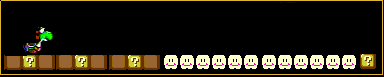

Welcome to KNBnoob1's awesome Web site!
Best viewed in FULL SCREEN or MAXIMIZED!Text-only version for older systems, mobile devices or if you hate clutter
My meme collection
Legacy site that was ported to KaiOS
About me:
Alias: KNBnoob1 or KNB_The_Noob_1
Pronouns: he/him/they/them
I use Arch (part of the GNU/Linux family), by the way
Proudly stuck in the 2000s =D
Loves all things gaming, retro, DBZ and computing



Am also a certified Pokemon Champion of the Sinnoh Region, as shown below
Some of my projects:

GitHub: KNBnoob1
NationStates: United
Peasants of Animalia
This page was made to support the
amazing

along with these other wonderful... things:


WARNING: Do you have a SENSE of HUMOR?!?!
(well I don't according to nightlyDevice)


Advertisement section - only promotes the BEST of the BEST software from
a HAND-PICKED selection!


Questions? Feel free to contact me at:
E-mail: ngk5760@gmail.com
Discord: kn_b_the_noob_we_never_asked_for (user ID: 899559949452070922)
Roblox (don't think I'll be online often though): mjdscbd123official
AOL Instant Messenger (via
iwarg.ddns.net): KNHNB
Escargot MSN: KNBnoob1
Internet Archive: @KNBnoob1
This Web site is currently

Made by KNBnoob1 with <3

This page was made with
RetroZilla 2.2's Composer tool as a tribute to the
many highly creative websites of the 1990s and early 2000s.
Last updated
12/06/2024 10:08PM GMT+07:00